1. Lecture Objectives
This lecture introduces the fundamental concepts that form the foundation of machine learning. We begin by distinguishing artificial intelligence, machine learning, and deep learning, and by discussing how machines acquire and use knowledge compared to humans. We then present the main machine learning paradigms, including supervised, unsupervised, and reinforcement learning, along with common machine learning tasks such as regression, classification, clustering, and dimensionality reduction. The lecture also provides a high-level overview of deep learning and its growing impact. Finally, we review the essential mathematical foundations required for the course, including core concepts from linear algebra and probability theory that will be used throughout subsequent lectures.
2. Artificial Intelligence
There is no universally accepted definition of artificial intelligence (AI), partly because natural intelligence itself is not fully understood or formally defined. In general, AI refers to a system’s ability to correctly interpret external data, learn from that data, and use those learnings to achieve specific goals and tasks through flexible adaptation.
Artificial intelligence, sometimes called machine intelligence or computational intelligence, describes intelligence demonstrated by machines, in contrast to the natural intelligence displayed by humans. AI is often used to describe systems that mimic cognitive functions typically associated with the human mind, such as learning, reasoning, and problem solving. Early AI systems were primarily rule-based, meaning that all rules and exceptions had to be explicitly programmed by humans.
Despite advances in automation, humans still play a critical role in the development, supervision, and improvement of AI systems. Human expertise is often required to design models, interpret results, and ensure that AI systems operate reliably and ethically.
2.1 Humans vs AI
AI-driven applications typically excel in speed of execution, computational accuracy, and the ability to perform repetitive or large-scale tasks without fatigue. These systems are particularly effective in tedious and monotonous jobs such as large-scale data analysis, automated inspection, and pattern detection across massive datasets. In contrast, human intelligence is characterized by adaptive learning, reasoning from limited data, creativity, and the ability to transfer knowledge across different domains. Unlike most AI systems, humans do not always rely on large amounts of pre-labeled data to learn new concepts (Gupta 2021).
Despite the impressive capabilities of modern AI systems, humans still play a central role in defining problems, curating data, interpreting results, and ensuring responsible use of these technologies. AI systems are tools that augment human decision making rather than completely replace it.
One of the true challenges of artificial intelligence is solving tasks that are easy for humans to perform but difficult to formalize mathematically. For example, humans can recognize faces, understand sarcasm in language, or navigate unfamiliar environments with little effort, yet these tasks remain challenging for AI systems because they require complex perception, context understanding, and generalization abilities.
3. Data
At the core of modern artificial intelligence and machine learning lies data. Broadly speaking, data represents all observable facts about the world. These facts may originate from physical measurements, human-generated content, sensors, or digital systems. Machine learning systems do not directly reason about the world itself; instead, they learn patterns from data that represents the world.
Data can take many different forms depending on the domain and the type of information being captured. One of the most common forms is tabular data, where each row corresponds to an observation and each column represents a feature. This format is widely used in applications such as healthcare records, financial transactions, and survey data, where structured attributes describe each instance.
From a machine learning perspective, data is typically represented in structured mathematical form. For example, tabular data is often represented as a matrix \(X \in \mathbb{R}^{N \times d}\), where \(N\) denotes the number of samples and \(d\) denotes the number of features. Similarly, images can be represented as tensors of pixel intensities, videos as sequences of image frames, and time-series data as ordered sequences indexed over time. This unified representation enables machine learning algorithms to process diverse data modalities using common mathematical tools, particularly those from linear algebra and probability theory.
Beyond tabular data, modern machine learning systems must handle more complex and high-dimensional data types. Images represent visual information and are typically stored as arrays of pixel values. Videos extend images by incorporating temporal structure, allowing models to capture motion and dynamics over time. Language data, including text and speech, encodes human communication and requires models to capture syntax, semantics, and contextual relationships between words and phrases.
In addition, many real-world applications rely on sensor data, such as inertial measurement unit (IMU) signals, heart rate measurements, and other physiological recordings. These data sources are often sequential and time-dependent, requiring models that can capture temporal dependencies and evolving patterns. These different forms of data are commonly referred to as data modalities, each of which requires specialized representations and modeling approaches.
While data provides raw observations, it is not inherently meaningful on its own. The process of analyzing data and extracting patterns leads to information. When this information becomes actionable—meaning it can be used to guide decisions, predictions, or reasoning—it is referred to as knowledge. This progression from data to information to knowledge forms a central theme in machine learning, where models are designed to transform raw data into useful and actionable insights.
4. Knowledge
Knowledge can generally be categorized into three main types: explicit knowledge, implicit knowledge, and tacit knowledge. Understanding these distinctions is important in machine learning because different types of knowledge require different approaches for representation and learning.
Explicit knowledge refers to knowledge that is easy to articulate, document, and share with others. This type of knowledge can be written down in textbooks, manuals, or databases and is often structured in a way that allows it to be easily communicated. For example, a factual statement such as “The capital of the State of Georgia is Atlanta” represents explicit knowledge because it can be clearly expressed and transferred between individuals or systems.
Implicit knowledge refers to the practical application of explicit knowledge. It often involves skills or procedures that can be learned through instruction and practice. Unlike explicit knowledge, implicit knowledge is demonstrated through action rather than simply stated as facts. For example, knowing how to operate a photocopier or apply a known procedure in a new setting represents implicit knowledge, as it involves applying previously learned information to accomplish a task.
Tacit knowledge refers to knowledge gained through personal experience that is often difficult to express formally or transfer through written or verbal communication. This type of knowledge typically develops through practice, observation, and intuition. Examples include skills such as swimming, reading social cues, speaking fluently in a language, or recognizing faces. Tacit knowledge is particularly challenging for artificial intelligence systems because it is difficult to fully formalize or encode into explicit rules.
5. Machine Learning
Machine learning (ML) is a subset of artificial intelligence that focuses on developing algorithms that can learn patterns from data and improve their performance over time without being explicitly programmed for every possible scenario. Instead of relying on manually written rules, machine learning systems build mathematical models using sample data, commonly referred to as training data, to make predictions or decisions.
Traditional rule-based AI systems require engineers to explicitly define all rules and exceptions. While effective for well-defined problems, these systems often fail when dealing with complex environments where rules are difficult to specify. Machine learning addresses this limitation by allowing systems to automatically discover patterns and relationships directly from data. This makes ML particularly useful in applications where the underlying structure of the problem is unknown or too complex to model manually.
Machine learning is considered superior to purely rule-based approaches in many real-world scenarios because it can adapt to new data, generalize to unseen situations, and improve performance as more data becomes available. Examples of successful machine learning applications include machine translation, recommender systems, fraud detection, speech recognition, and medical diagnosis.
At a high level, a machine learning system typically follows three main steps:
Training: The model learns patterns from labeled or unlabeled data.
Validation: The model is evaluated and tuned to improve performance.
Testing: The trained model is applied to new unseen data.
Machine learning has enabled major advances across many fields, particularly in areas involving large amounts of data. Some of the most important application domains are described below.
5.1 Recommendation Systems
Recommendation systems are machine learning systems designed to suggest relevant items to users based on their preferences, behavior, or similarities to other users. These systems are widely used in online platforms to personalize user experiences and increase engagement.
For example, streaming platforms such as Netflix recommend movies based on viewing history, e-commerce platforms such as Amazon recommend products based on browsing behavior, and music platforms such as Spotify recommend songs based on listening patterns. These systems often rely on techniques such as collaborative filtering, content-based filtering, or hybrid approaches that combine both methods.
The key challenge in recommendation systems is predicting user preferences from incomplete and noisy data. Machine learning models address this by identifying hidden patterns in user interactions and learning similarities between users or items.
5.2 Computer Vision
Computer vision is a field of machine learning focused on enabling machines to interpret and understand visual information such as images and videos. This area has seen significant advances due to deep learning, particularly through convolutional neural networks (CNNs) and, more recently, vision transformers.
At a high level, computer vision tasks involve extracting meaningful structure from raw pixel data. Unlike tabular data, images are high-dimensional and contain spatial relationships that must be preserved during processing. As a result, computer vision models are designed to capture both local patterns (such as edges and textures) and global structures (such as objects and scenes).
Common computer vision tasks include image classification, object detection, semantic segmentation, image captioning, and visual question answering. These tasks differ in their level of complexity and the type of output they produce. For instance, classification assigns a single label to an image, while object detection identifies multiple objects and their locations, and segmentation assigns a label to each pixel in the image.
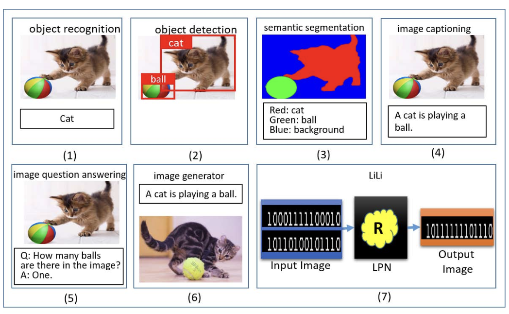
Computer vision plays a critical role in many real-world applications. Autonomous vehicles rely on visual perception to detect pedestrians, vehicles, and traffic signs. In healthcare, medical imaging systems use computer vision to assist in diagnosing diseases such as cancer. In security and biometrics, facial recognition systems are used for identity verification and access control.
One of the main challenges in computer vision is dealing with variability in real-world data. Images may differ due to changes in lighting conditions, viewpoint, scale, noise, and occlusion. Machine learning models address these challenges by learning robust feature representations from large datasets, allowing them to generalize across diverse visual environments.
5.3 Natural Language Processing
Natural language processing (NLP) focuses on enabling machines to understand, interpret, and generate human language. Language data differs fundamentally from visual data in that it is sequential, discrete, and highly context-dependent. Words derive meaning not only from their individual definitions but also from their relationships with other words in a sentence.
NLP tasks span a wide range of applications, including text classification, machine translation, sentiment analysis, and question answering (Mayo 2018). More advanced systems also perform dialogue generation and reasoning over language. Modern NLP has been transformed by deep learning, particularly through transformer-based architectures that model long-range dependencies in text.
These diverse tasks are illustrated in Figure 3, which highlights several representative applications of NLP.
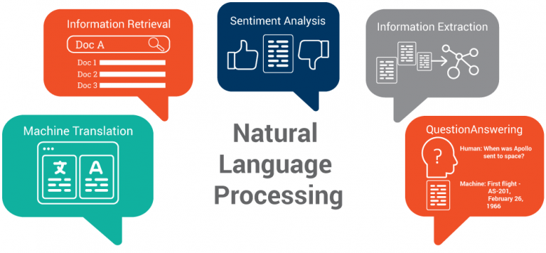
A key challenge in NLP is ambiguity. Words and sentences can have multiple meanings depending on context, tone, and structure. In addition, language contains complex grammatical patterns and long-range dependencies, where the meaning of a word may depend on other words appearing far earlier or later in a sentence.
Machine learning approaches address these challenges by learning statistical representations of language from large text corpora. These representations capture syntactic structure (how words are arranged), semantic meaning (what words represent), and contextual relationships (how meaning changes based on surrounding text). As a result, modern NLP systems can perform tasks such as generating coherent text, answering questions, and translating between languages with high accuracy.
Together, computer vision and natural language processing illustrate how machine learning enables systems to interpret and interact with two fundamental forms of human information: visual perception and language. While computer vision focuses on understanding the visual world, NLP focuses on understanding human communication. These domains will be revisited throughout the course, where we will study the underlying models and algorithms in greater detail.
6. Paradigms of Machine Learning
Machine learning algorithms can be broadly categorized based on the type of data available during training and how the learning process is structured. The three primary paradigms are supervised learning, unsupervised learning, and reinforcement learning. Each paradigm differs in how information is provided to the model and what objective the model attempts to optimize.
6.1 Supervised Learning
Supervised learning is the most widely used machine learning paradigm and involves training models using labeled data. In this setting, each training example consists of an input paired with a corresponding correct output, often referred to as a label. The goal is to learn a mapping from inputs to outputs so that the model can generalize and make accurate predictions on new, unseen data.
For example, in an image classification task, a dataset may contain images of cats, horses, and cars along with their corresponding labels. By learning patterns that distinguish these categories, the model can classify new images based on their visual features. Other common applications include predicting housing prices from property attributes (regression) and identifying whether an email is spam or not (classification).
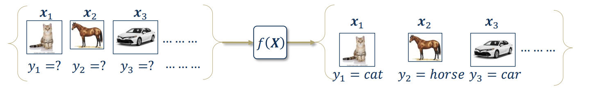
As shown in Figure 4, the model is provided with labeled examples during training and learns to approximate the underlying relationship between inputs and outputs. This explicit supervision provides a clear learning signal, making supervised learning highly effective in many practical applications, while also requiring access to high-quality labeled data.
Supervised learning problems are commonly categorized into two types: regression, where the output is a continuous value, and classification, where the output is a discrete category.
6.2 Unsupervised Learning
Unsupervised learning involves training models on data that does not include labels. Instead of learning a mapping between inputs and predefined outputs, the goal is to uncover hidden structure or patterns within the data itself. This may involve identifying groups of similar data points, detecting anomalies, or learning compact representations that capture the most important underlying features.
For example, given a collection of audio recordings without speaker labels, an unsupervised learning algorithm may group recordings based on similarities in voice characteristics. Similarly, unsupervised learning is widely used in applications such as customer segmentation, anomaly detection, and exploratory data analysis, where the structure of the data is not known in advance.
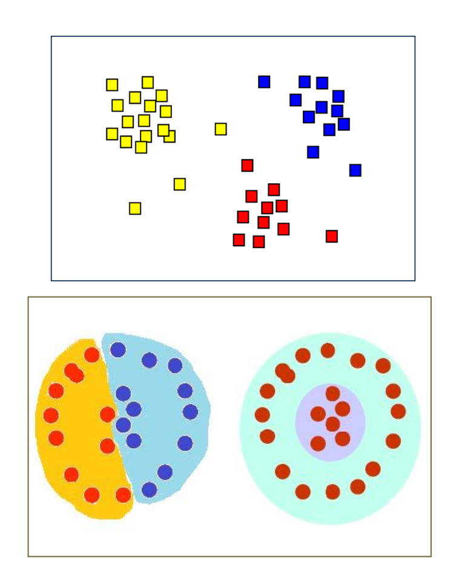
As illustrated in Figure 5, the model is not given any labels indicating how the data should be organized. Instead, it must infer structure directly from the data itself. This makes unsupervised learning particularly powerful for discovering previously unknown patterns, but also more challenging, since there is no explicit notion of “correct” output to guide the learning process.
6.3 Reinforcement Learning
Reinforcement learning differs from supervised and unsupervised learning in that the model learns through interaction with an environment rather than from a fixed dataset. In this paradigm, an agent observes the current state of the environment, takes an action, and receives feedback in the form of a reward or penalty. Based on this feedback, the agent updates its behavior over time. The objective is to learn a strategy, known as a policy, that maximizes the total cumulative reward over a sequence of interactions.
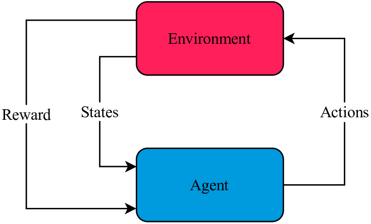
As illustrated in Figure 6, reinforcement learning is fundamentally a feedback-driven process. Unlike supervised learning, where correct answers are provided during training, the agent must discover which actions are beneficial by observing the rewards it receives. This makes reinforcement learning particularly well-suited for sequential decision-making problems, where actions have long-term consequences.
For example, in a game such as Tetris, an agent may receive a positive reward for clearing rows and a negative reward for creating blocked spaces. By repeatedly interacting with the environment and observing the outcomes of its actions, the agent gradually learns which strategies lead to better long-term performance.
Reinforcement learning has been successfully applied in domains such as robotics, game playing, recommendation systems, and autonomous control. A central challenge in this paradigm is the trade-off between exploration and exploitation. Exploration involves trying new actions to gather information about the environment, while exploitation involves selecting actions that are already known to yield high rewards. Balancing these two aspects is critical for learning an effective policy.
6.4 Representation Learning
Beyond the distinction between supervised, unsupervised, and reinforcement learning, modern machine learning also emphasizes how models learn useful representations of data. Representation learning refers to the ability of a model to automatically discover features or transformations of the input that make it easier to perform a given task.
In traditional machine learning, feature extraction often requires significant domain expertise, where relevant characteristics must be manually designed. In contrast, representation learning allows models to learn these features directly from raw data. These learned representations often capture underlying structure in the data and can be reused across multiple tasks.
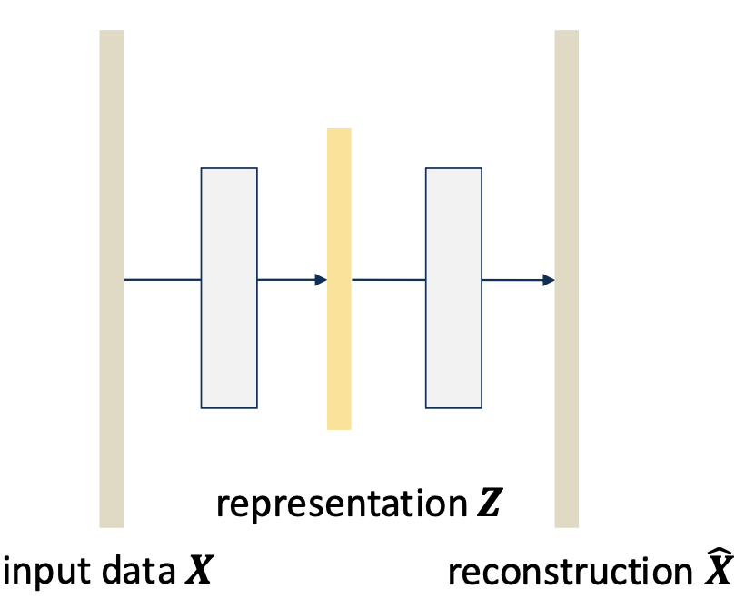
As illustrated in Figure 7, the model learns an intermediate representation \(Z\) that serves as a compressed or structured encoding of the input data. This representation captures the most informative aspects of the data while discarding irrelevant variation, enabling more efficient learning and generalization.
Representation learning plays a central role across many machine learning paradigms. In supervised settings, models learn representations that are predictive of labels. In unsupervised settings, representations capture intrinsic structure such as clusters or manifolds. In reinforcement learning, representations help encode states in a way that facilitates decision-making. This perspective unifies different learning approaches and highlights the importance of feature learning as a core component of modern machine learning systems.
7. Tasks in Machine Learning
Machine learning problems can be categorized in two complementary ways. Learning paradigms describe how models learn from data (for example supervised, unsupervised, or reinforcement learning), while machine learning tasks describe what the model is expected to predict or discover. In this section, we focus on the most common machine learning tasks.
Machine learning tasks are typically categorized based on the type of output a model is expected to produce during testing. These tasks define the objective of the learning process and determine how model performance is evaluated. Some of the most common machine learning tasks include regression, classification, clustering, and dimensionality reduction.
7.1 Regression
Regression refers to predicting a continuous numerical value based on one or more input variables. In regression problems, the output variable typically represents a measurable quantity such as price, temperature, probability, or risk score. The goal of regression is to learn a functional relationship that maps input variables (independent variables) to an output variable (dependent variable), enabling accurate predictions on unseen data.
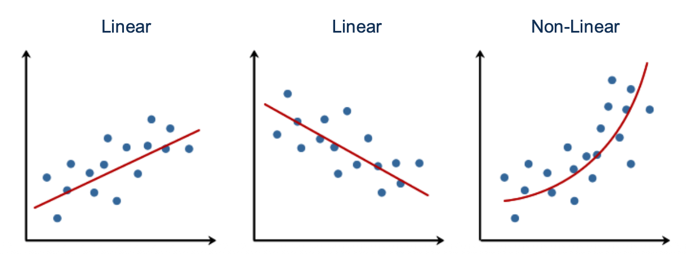
As illustrated in Figure 8, regression can be viewed as fitting a function to data points in order to capture the underlying relationship between variables. This relationship may be linear or nonlinear, depending on the complexity of the data. Once this mapping is learned, the model can predict continuous outputs for new inputs.
For example, a regression model may be used to predict housing prices based on features such as square footage, number of bedrooms, and location. Other examples include predicting stock prices, estimating medical risk scores, forecasting energy consumption, or predicting traffic flow. In each case, the model attempts to approximate an unknown function that relates inputs to outputs.
Common approaches to regression include a wide range of models capable of learning different types of functional relationships, from simple linear mappings to highly flexible nonlinear functions. Later in this course, we will study regression as one of the fundamental problems that motivates many machine learning algorithms.
7.2 Classification
Classification refers to predicting which category or class a new observation belongs to. Unlike regression, where outputs are continuous, classification produces discrete outputs representing class membership. The goal is to learn a decision boundary that separates different categories based on the input features.
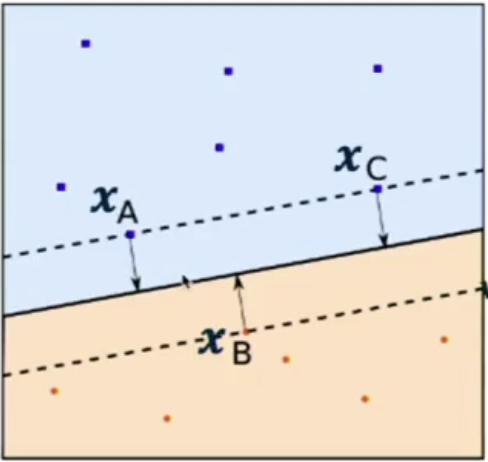
As illustrated in Figure 9, classification can be viewed geometrically as partitioning the feature space into distinct regions, where each region corresponds to a predicted class. The decision boundary divides the space such that similar data points fall into the same region, while dissimilar points are separated. New observations are classified based on their position relative to this boundary.
For example, classification models can be used to determine whether an email is spam or not, whether a medical image contains a tumor, whether a handwritten digit corresponds to a particular number, or whether a financial transaction is fraudulent. Classification problems may be binary (two classes) or multiclass (more than two classes).
Common approaches to classification include a wide range of models that learn different types of decision boundaries, from simple linear separators to more complex nonlinear structures. Many modern artificial intelligence applications rely heavily on classification models, particularly in computer vision and natural language processing.
7.3 Clustering
Clustering is an unsupervised learning task that involves dividing data into groups, called clusters, such that data points within the same group are more similar to each other than to those in other groups. Unlike classification, clustering does not rely on labeled data; instead, the goal is to discover intrinsic structure directly from the data.
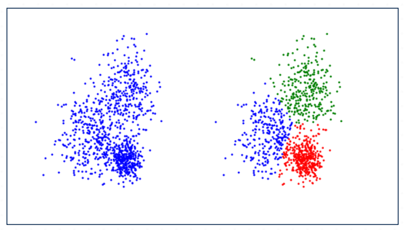
As illustrated in Figure 10, clustering can be viewed as identifying natural groupings within data. Initially, the dataset may appear unstructured, but a clustering algorithm reveals patterns by assigning data points to different groups based on similarity. These groupings help uncover hidden structure that is not explicitly provided.
For example, clustering may be used to segment customers based on purchasing behavior, group similar documents together, organize images by visual similarity, or identify patterns in biological data. In each case, the objective is to uncover meaningful organization in the data without prior knowledge of labels.
A key challenge in clustering is defining what it means for data points to be similar and determining how many clusters should be formed. Different approaches may produce different groupings depending on how similarity is measured and how structure is inferred.
Common approaches to clustering include a wide range of methods that identify structure in different ways, from partitioning data into distinct groups to modeling underlying distributions. Clustering is often used as an exploratory tool to better understand datasets before applying supervised learning methods.
7.4 Dimensionality Reduction
Dimensionality reduction involves reducing the number of features or variables in a dataset while preserving as much important information as possible. This is particularly important because high-dimensional data can be computationally expensive to process and may contain redundant, irrelevant, or noisy information. The goal is to find a lower-dimensional representation that captures the most significant structure of the data.
Interactive Notebook: Section 2.2 — PCA
Explore principal components: adjust data angle, variance ratio, and number of points. See how PC arrows align with maximum variance directions and how a linear AE learns the same subspace.
As illustrated in Figure 11, dimensionality reduction can be understood as projecting high-dimensional data onto a lower-dimensional space that retains the most important patterns. Even though the data originally exists in a higher-dimensional space, much of its variability may lie along a smaller number of directions, allowing for an efficient representation without significant loss of information.
For example, an image consisting of thousands of pixels may be represented using a smaller set of informative features without significantly affecting performance. Dimensionality reduction is widely used for data visualization, noise reduction, feature extraction, and improving computational efficiency. It also helps mitigate the curse of dimensionality, which refers to the challenges that arise when working with very high-dimensional datasets.
Common approaches to dimensionality reduction include a variety of methods that identify compact representations of data, ranging from linear projections to more complex nonlinear transformations. These methods enable models to focus on the most relevant structure in the data while discarding unnecessary detail.
These tasks form the foundation of many machine learning applications, and many real-world systems combine multiple tasks together. For example, a computer vision system may first reduce dimensionality to extract meaningful features, then cluster similar patterns, and finally perform classification to recognize objects.
Importantly, these tasks often align with the learning paradigms introduced earlier. For example, regression and classification are typically supervised learning tasks because they require labeled data, while clustering and dimensionality reduction are usually unsupervised learning tasks. Reinforcement learning, in contrast, focuses on sequential decision-making problems where an agent learns through interaction with an environment rather than through static prediction tasks.
8. Deep Learning
Deep learning is a subfield of machine learning that focuses on models capable of learning hierarchical representations directly from data. These models learn multiple levels of abstraction, allowing machines to build complex concepts from simpler ones. For example, in image recognition tasks, early layers of a deep neural network may learn to detect edges, later layers may learn shapes, and deeper layers may learn object-level representations.
One of the major advantages of deep learning is its ability to perform end-to-end learning. Traditional machine learning methods often rely on manually designed features, which require significant domain expertise and engineering effort. In contrast, deep learning models automatically learn useful feature representations directly from raw data, reducing the need for manual feature engineering and often improving performance.
Although the first artificial neural network models were proposed in the 1950s, deep learning only became widely successful in the last two decades. This progress has been driven by three main factors: the availability of large datasets, significant increases in computational power (particularly through GPUs and specialized hardware), and improvements in training algorithms.
Modern deep learning models have grown significantly in size and capability. For example, large language models such as GPT-based systems contain billions or even trillions of parameters and are capable of performing tasks such as text generation, reasoning, translation, and question answering. The increasing real-world impact of deep learning has led to major investments from academia and industry, accelerating research and deployment across fields such as healthcare, autonomous systems, robotics, and scientific discovery.
Because deep learning models rely heavily on mathematical optimization, linear algebra, and probability theory, understanding these mathematical foundations is essential for studying modern machine learning methods.
9. AI vs ML vs DL
Artificial intelligence (AI), machine learning (ML), and deep learning (DL) are closely related fields that are often confused. Artificial intelligence is the broadest concept and refers to systems designed to perform tasks that typically require human intelligence. Machine learning is a subset of AI that focuses on algorithms that learn patterns from data rather than relying solely on explicitly programmed rules. Deep learning is a further subset of machine learning that focuses on neural networks with multiple layers capable of learning hierarchical representations.
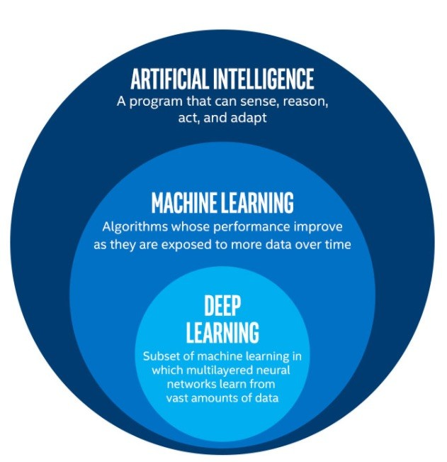
Figure 12 illustrates the relationship between these three areas. Machine learning represents a subset of artificial intelligence that focuses specifically on data-driven learning methods, while deep learning represents a subset of machine learning that uses multi-layer neural networks to automatically learn feature representations.
Compared to deep learning, traditional machine learning methods often rely more heavily on manually designed features, a process known as feature engineering. Designing these features can require significant domain knowledge and time. Deep learning reduces this need by automatically learning useful representations directly from raw data, allowing models to develop complex concepts from simpler patterns.
For example, in a traditional computer vision system, engineers might manually design features such as edge detectors or texture descriptors. In contrast, a deep learning model can automatically learn these features during training, often achieving better performance when sufficient data is available.
Understanding the relationship between AI, ML, and DL helps clarify the scope of this course. While artificial intelligence is a broad discipline, this course primarily focuses on the mathematical foundations of machine learning, including the principles that also support modern deep learning systems.
10. Review of Linear Algebra
Linear algebra forms one of the most important mathematical foundations of machine learning. Most machine learning models represent data, parameters, and predictions using vectors and matrices, and many learning algorithms rely heavily on matrix operations and linear transformations. In this section, we review the key linear algebra concepts that will be used throughout the course.
10.1 Basic objects
Machine learning models operate on several fundamental mathematical objects. The simplest of these is a scalar, which is a single numerical value such as \(x \in \mathbb{R}\).
A vector is an ordered collection of numbers, typically represented as a column vector \(\mathbf{x} \in \mathbb{R}^{n \times 1}\). Vectors are commonly used to represent data points and feature sets.
A matrix is a two-dimensional array of numbers, denoted \(A \in \mathbb{R}^{m \times n}\). Matrices are used to represent datasets and linear transformations.
A tensor is a higher-order generalization of vectors and matrices, used to represent structured data such as images, videos, and batches of features.
10.2 Geometric intuition of linear structure
One of the key insights from linear algebra is that data often exhibits simple geometric structure.
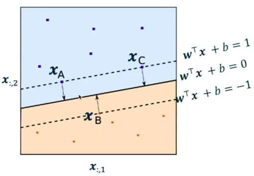
As shown in Figure 13, linear boundaries partition the feature space into regions. This idea generalizes to higher dimensions through hyperplanes.
Interactive Notebook: Figure 7.4 Linear Subspace Geometry
Interact with the 2D subspace spanned by basis vectors and inspect geometric relationships.
Figure 14 illustrates how vectors span subspaces. Many machine learning methods rely on the idea that high-dimensional data can be approximated using lower-dimensional linear structure.
10.3 Why linear algebra matters in ML
Linear algebra provides the language used to describe most machine learning models.
For example, a linear model computes: \[\mathbf{y}_i = W^\top \mathbf{x}_i + \mathbf{b},\] where \(\mathbf{x}_i \in \mathbb{R}^d\), \(W \in \mathbb{R}^{d \times k}\), and \(\mathbf{b} \in \mathbb{R}^k\).
Such linear transformations appear throughout regression, classification, and neural networks.
10.4 Core linear algebra operations
These operations form the fundamental building blocks used throughout machine learning.
Inner product (dot product)
\[\langle \mathbf{x}, \mathbf{y} \rangle = \mathbf{x}^\top \mathbf{y}.\]
The inner product measures alignment between vectors and can be interpreted geometrically as projection.
Matrix-vector multiplication
\[\mathbf{y} = A\mathbf{x}.\]
This operation represents a linear transformation of space.
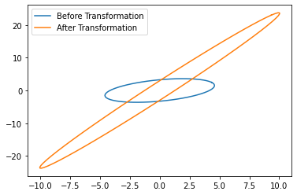
Matrix multiplication
\[C = AB, \quad A \in \mathbb{R}^{m \times n},\; B \in \mathbb{R}^{n \times p}.\]
Matrix multiplication corresponds to the composition of linear transformations. If a vector is first transformed by \(A\) and then by \(B\), the overall effect is equivalent to applying a single transformation given by the product \(BA\).
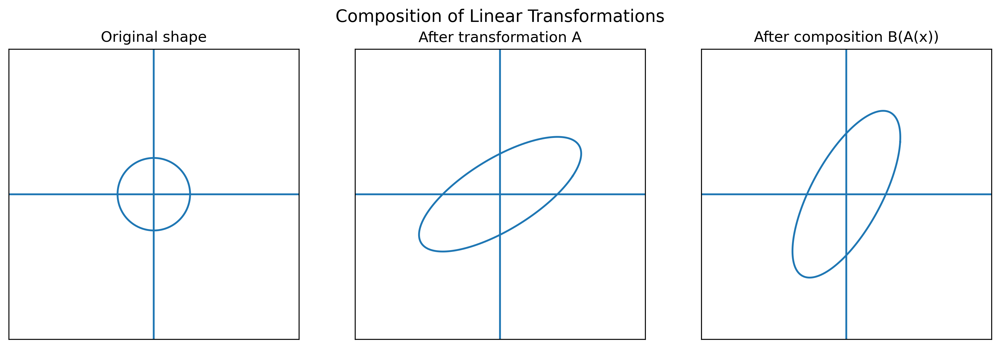
As illustrated in Figure 16, matrix multiplication provides a concise way to represent multiple transformations applied in sequence. This idea is fundamental in machine learning, where models often consist of many layers that successively transform data.
10.5 Derived operations and structure
These concepts build on the core operations and reveal deeper structure in data.
Norms
\[\begin{aligned} \|\mathbf{x}\|_1 &= \sum_i |x_i|, \\ \|\mathbf{x}\|_2 &= \left(\sum_i x_i^2\right)^{1/2}, \\ \|\mathbf{x}\|_p &= \left(\sum_i |x_i|^p\right)^{1/p}. \end{aligned}\]
The Frobenius norm: \[\|A\|_F = \sqrt{\operatorname{Tr}(A A^\top)}.\]
Eigenvalues and eigenvectors
\[A = V\,\mathrm{diag}(\lambda)\,V^{-1}.\]
Eigenvectors define directions preserved by transformations, and eigenvalues determine scaling.
Interactive Notebook: Projection and Residual Orthogonality
Adjust vectors and observe projection of y onto the subspace with orthogonal residual y-hat.
Projection onto important directions (e.g., eigenvectors) yields efficient approximations of data.
Singular value decomposition (SVD)
\[A = U D V^\top.\]
SVD decomposes a matrix into orthogonal directions that capture its structure.
10.6 Applications in machine learning
These concepts are used directly in machine learning algorithms.
Low-rank approximation
\[X \approx U_q D_q V_q^\top.\]
This approximates data using a lower-dimensional subspace, preserving dominant structure.
As shown in Figure 17, this corresponds to projecting data onto a subspace.
Identity and inverse
The identity matrix satisfies: \[I_n \mathbf{x} = \mathbf{x}.\]
If invertible: \[A^{-1}A = I_n.\]
Moore–Penrose pseudoinverse
For non-invertible matrices: \[A^\dagger = V D^\dagger U^\top.\]
This provides least-squares solutions: \[\mathbf{x}^* = A^\dagger \mathbf{b}.\]
11. Review of Probability Theory
Probability theory provides the mathematical framework for reasoning about uncertainty. Since machine learning models must make predictions from incomplete or noisy data, probability plays a central role in modeling uncertainty, estimating parameters, and evaluating predictions. Many machine learning algorithms, including regression, classification, and deep learning, can be interpreted through a probabilistic lens.
In this section, we review the core probability concepts that will be used throughout the course.
11.1 Foundational objects
Probability theory begins with three fundamental components. The first is the sample space, denoted \(\Omega\), which represents the set of all possible outcomes of a random experiment. For example, if we flip a coin, the sample space is:
\[\Omega = \{\text{Heads}, \text{Tails}\}.\]
The second component is the event space \(\mathcal{F}\), which consists of subsets of the sample space. Each subset represents an event of interest. For example, the event of obtaining heads corresponds to the subset \(\{\text{Heads}\}\).
The third component is the probability measure \(P\), which assigns probabilities to events. The probability measure defines how likely each event is and must obey certain mathematical rules.
Together, \((\Omega, \mathcal{F}, P)\) define a probability space.
11.2 Axioms of probability
Probability is governed by three basic axioms. For any event \(A \in \mathcal{F}\), the probability must satisfy:
\[\begin{aligned} 0 &\le P(A) \le 1, \\ P(\Omega) &= 1. \end{aligned}\]
The first axiom states that probabilities must lie between zero and one. The second states that the probability of all possible outcomes occurring must equal one.
A third important rule concerns mutually exclusive events. If events \(A_1, A_2, \dots\) cannot occur simultaneously, then:
\[P\!\left(\bigcup_i A_i\right) = \sum_i P(A_i).\]
This rule allows probabilities of disjoint outcomes to be added together.
11.3 Useful rules
Several important rules follow directly from the probability axioms. For example, if event \(A\) is contained within event \(B\), then:
\[A \subseteq B \implies P(A) \le P(B).\]
This reflects the intuitive idea that a more restrictive event cannot be more probable than a broader one.
Another important rule is the complement rule:
\[P(\Omega \setminus A) = 1 - P(A),\]
which states that the probability of an event not occurring equals one minus the probability that it does occur.
The inclusion–exclusion rule gives the probability of two events occurring:
\[P(A \cup B) = P(A) + P(B) - P(A \cap B).\]
Conditional probability is also fundamental:
\[P(A \mid B) = \frac{P(A \cap B)}{P(B)}.\]
This quantity measures how likely event \(A\) is given that event \(B\) has already occurred. Conditional probability forms the basis of Bayesian inference and many probabilistic machine learning models.
Two events are said to be independent if:
\[P(A \cap B) = P(A)P(B).\]
Independence plays an important role in simplifying probabilistic models and appears frequently in assumptions made by machine learning algorithms.
11.4 Random variables
A random variable is a function that maps outcomes from the sample space to real numbers:
\[X : \Omega \to \mathbb{R}.\]
Random variables allow us to convert outcomes into numerical quantities that can be analyzed mathematically.
Random variables are typically categorized as either discrete or continuous. A discrete random variable takes values from a finite or countable set, such as the outcome of rolling a die. A continuous random variable takes values from a continuous range, such as measurements of height or temperature.
Random variables are central to machine learning because they allow us to model uncertain quantities such as labels, predictions, and noise.
11.5 PMF, CDF, and PDF
The behavior of a random variable is described by its probability distribution.
For a discrete random variable \(X\), the probability mass function (PMF) is defined as:
\[p_X(x) = P(X=x).\]
This function assigns a probability to each possible value and must satisfy:
\[0 \le p_X(x) \le 1, \qquad \sum_x p_X(x)=1.\]
The cumulative distribution function (CDF) is defined as:
\[F_X(x) = P(X \le x).\]
The CDF applies to both discrete and continuous variables and describes the probability that the random variable is less than or equal to a given value.
For continuous random variables, probabilities are described using the probability density function (PDF):
\[f_X(x) = \frac{d}{dx}F_X(x).\]
The PDF must satisfy:
\[\int_{-\infty}^{\infty} f_X(x)\,dx = 1.\]
Unlike discrete probabilities, continuous densities do not directly give probabilities at a single point. Instead, probabilities are computed over intervals.
11.6 Joint distributions and the chain rule
Machine learning often involves multiple random variables. Their relationships are described using joint distributions.
For two random variables \(X\) and \(Y\), the joint distribution describes their simultaneous behavior:
\[\begin{aligned} p_{X,Y}(x,y) &= P(X=x, Y=y), \\ F_{X,Y}(x,y) &= P(X\le x, Y\le y). \end{aligned}\]
From joint distributions we can derive conditional distributions, which are heavily used in probabilistic modeling.
A key identity is the chain rule of probability:
\[p(x_1,x_2,\dots,x_n) = p(x_1)\prod_{i=2}^n p(x_i\mid x_1,\dots,x_{i-1}).\]
This factorization is extremely important in machine learning because it allows complex distributions to be broken into simpler conditional relationships. Many modern models, including graphical models, autoregressive models, and transformers, rely on this factorization idea.
11.7 Expectation, variance, and covariance
Expectation represents the average value of a random variable. For a discrete random variable:
\[\mathbb{E}[X] = \sum_x x p_X(x),\]
and for a continuous random variable:
\[\mathbb{E}[X] = \int_{-\infty}^{\infty} x f_X(x)\,dx.\]
Expectation plays a central role in machine learning because many learning objectives involve minimizing expected error.
Variance measures how spread out a random variable is around its mean:
\[\text{Var}(X) = \mathbb{E}[(X-\mathbb{E}[X])^2].\]
Covariance measures how two variables vary together:
\[\text{Cov}(X,Y) = \mathbb{E}[(X-\mathbb{E}[X])(Y-\mathbb{E}[Y])].\]
These quantities are important in machine learning because they describe uncertainty, feature relationships, and appear in methods such as PCA and Gaussian models.
11.8 Important distributions
Certain probability distributions appear frequently in machine learning. These distributions are used to model uncertainty, noise, and data-generating processes across many applications.
Bernoulli distribution
The Bernoulli distribution models binary outcomes such as success/failure or true/false. For a random variable \(X \in \{0,1\}\) with parameter \(q\):
\[P(X=1)=q, \qquad P(X=0)=1-q.\]
This can also be written compactly as:
\[P(X=x)=q^x(1-q)^{1-x}, \qquad x\in\{0,1\}.\]
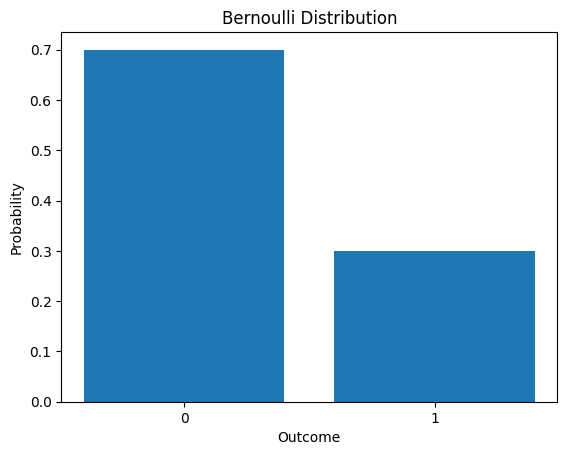
Binomial distribution
The binomial distribution models the number of successes in a fixed number of independent Bernoulli trials. For \(X \sim \text{Binomial}(n,p)\):
\[P(X=k) = \binom{n}{k} p^k (1-p)^{n-k}, \qquad k = 0,1,\dots,n.\]
This distribution generalizes the Bernoulli case to multiple trials and is commonly used in modeling counts and discrete outcomes.
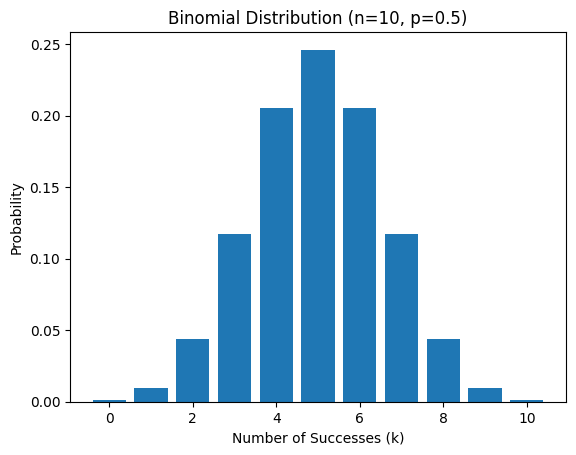
Gaussian distribution
The Gaussian (normal) distribution is one of the most important distributions in machine learning. A univariate Gaussian with mean \(\mu\) and variance \(\sigma^2\) has density:
\[\mathcal{N}(x;\mu,\sigma^2) = \frac{1}{\sqrt{2\pi\sigma^2}} \exp\!\left(-\frac{(x-\mu)^2}{2\sigma^2}\right).\]
Gaussian distributions are widely used because many natural processes approximately follow this distribution and because they have convenient mathematical properties.
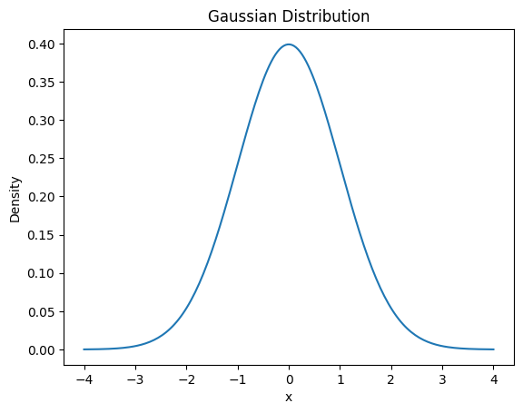
Multivariate Gaussian distribution
The multivariate Gaussian generalizes the Gaussian distribution to vectors. For \(\mathbf{x} \in \mathbb{R}^n\) with mean \(\boldsymbol{\mu}\) and covariance matrix \(\Sigma\):
\[\mathcal{N}(\mathbf{x};\boldsymbol{\mu},\Sigma) = \frac{1}{(2\pi)^{n/2}\det(\Sigma)^{1/2}} \exp\!\left( -\frac{1}{2} (\mathbf{x}-\boldsymbol{\mu})^\top \Sigma^{-1} (\mathbf{x}-\boldsymbol{\mu}) \right).\]
This distribution models correlations between variables and appears in many machine learning methods.
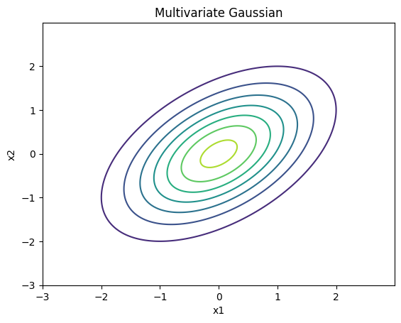
11.9 Law of total probability
The law of total probability allows us to decompose the probability of an event into contributions from mutually exclusive cases. Suppose \(\{B_1,\dots,B_n\}\) forms a partition of the sample space (meaning the events are disjoint and cover all possibilities). Then:
\[P(A) = \sum_{i=1}^n P(A \mid B_i)P(B_i).\]
This rule is important because it allows us to compute probabilities by conditioning on simpler or more interpretable events.
For example, suppose we want the probability that a classifier makes an error. We may condition on the true class:
\[P(\text{error}) = P(\text{error} \mid y=0)P(y=0) + P(\text{error} \mid y=1)P(y=1).\]
This decomposition appears frequently in machine learning when analyzing expected loss and classification error.
11.10 Bayes rule
Bayes rule provides a principled way to reverse conditional probabilities and update beliefs in light of new evidence. It follows directly from the definition of conditional probability:
\[P(A \mid B) = \frac{P(B \mid A)P(A)}{P(B)}.\]
Using the law of total probability, this can also be written as:
\[P(A \mid B) = \frac{P(B \mid A)P(A)} {\sum_i P(B \mid A_i)P(A_i)}.\]
In machine learning notation, Bayes rule is often expressed as:
\[P(y \mid x) = \frac{P(x \mid y)P(y)}{P(x)}.\]
This relationship is commonly interpreted as:
\[\text{posterior} = \frac{\text{likelihood} \times \text{prior}} {\text{evidence}}.\]
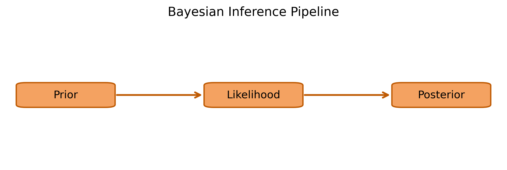
As illustrated in Figure 22, Bayes rule describes how prior beliefs are updated after observing data. The prior encodes what we believe before seeing the data, the likelihood measures how compatible the observed data is with a hypothesis, and the posterior combines the two to produce an updated belief.
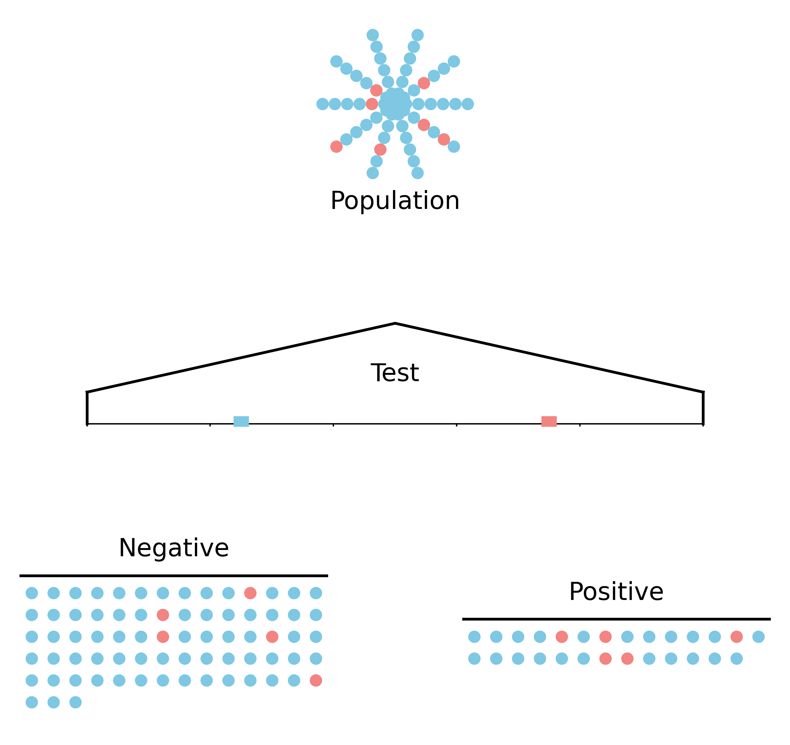
Figure 23 provides an intuitive interpretation of Bayesian updating. Even when a test is fairly accurate, the posterior probability depends strongly on the prior probability of the condition. For a rare condition, a positive test result may still have a substantial chance of being a false positive. Bayes rule accounts for this by combining prior probabilities with the likelihood of the observed outcome.
This principle forms the foundation of Bayesian inference and is widely used in probabilistic machine learning models, including Naive Bayes classifiers, Bayesian neural networks, and probabilistic graphical models.
11.11 Jensen’s inequality
Jensen’s inequality is one of the most important mathematical tools in machine learning theory. It describes how convex functions interact with expectations.
If \(f\) is a convex function and \(X\) is a random variable, then:
\[f(\mathbb{E}[X]) \le \mathbb{E}[f(X)].\]
If \(f\) is concave, the inequality reverses:
\[f(\mathbb{E}[X]) \ge \mathbb{E}[f(X)].\]
This result is important because many machine learning loss functions are convex, and Jensen’s inequality helps us derive bounds and guarantees.
One particularly important example involves the logarithm function, which is concave:
\[\log(\mathbb{E}[X]) \ge \mathbb{E}[\log X].\]
This property appears frequently in machine learning, including:
Log-likelihood optimization
Variational inference
EM algorithm derivations
KL divergence proofs
Risk bounds
Intuitively, Jensen’s inequality tells us that applying a nonlinear transformation before averaging is not the same as applying it after averaging. This subtle difference is extremely important in statistical learning theory.
12. Datasets used in this course
Throughout the lectures and homeworks, we make use of a range of synthetic and real datasets. Synthetic datasets are particularly useful for building geometric intuition, while real datasets help connect course concepts to practical machine learning applications.
12.1 Synthetic datasets
Synthetic datasets used in the course include:
Random Data
XOR Data
Circles Data
Spiral Data
Two Moons Data
These datasets are used to build geometric intuition for classification, clustering, nonlinearity, and representation structure.
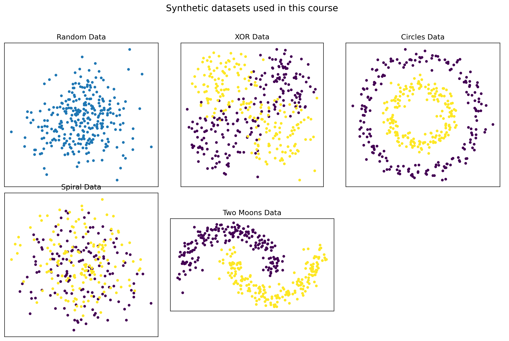
12.1.0.1 Random Data
A simple unstructured dataset consisting of randomly generated points. It is useful for illustrating the absence of meaningful structure and serves as a baseline when comparing against more structured datasets.
12.1.0.2 XOR Data
A classic nonlinear classification dataset in which data points from different classes occupy opposite quadrants. This dataset demonstrates the limitations of linear models and motivates the need for nonlinear decision boundaries.
12.1.0.3 Circles Data
A dataset consisting of concentric circles. It highlights the need for nonlinear feature transformations and is commonly used to illustrate kernel methods and representation learning.
12.1.0.4 Spiral Data
A highly nonlinear dataset where classes form interleaving spiral patterns. This dataset is useful for demonstrating the complexity of decision boundaries required for certain classification tasks.
12.1.0.5 Two Moons Data
A dataset with two interleaving crescent-shaped clusters. It is commonly used to illustrate nonlinear classification and clustering behavior.
12.2 Real datasets
12.2.0.1 IRIS Data
A classic dataset containing measurements of iris flowers from three different species. It is widely used for introductory classification tasks and visualization (Fisher 1936).
12.2.0.2 Diabetes dataset
A regression dataset used to predict disease progression from clinical variables. It is commonly used to demonstrate supervised regression methods (Efron et al. 2004).
12.2.0.3 California Housing data
A real-world regression dataset containing housing information used to predict median house values. It is useful for illustrating large-scale tabular learning problems (Kelley Pace and Barry 1997).
12.2.0.4 Digits dataset (sklearn_digits)
A dataset of handwritten digits represented as small grayscale images. It is used in homework assignments to demonstrate image classification techniques and is available through the scikit-learn library (Pedregosa et al. 2011).
12.2.0.5 MNIST
A large-scale handwritten digit dataset widely used as a benchmark for image classification and deep learning models (LeCun and Cortes 2010; LeCun et al. 1998).
12.2.0.6 ImageNet
A large-scale image dataset organized into thousands of object categories. It has played a central role in advancing modern computer vision and deep learning (Deng et al. 2009).
12.2.0.7 CURE-OR
A dataset designed for robust object recognition under real-world distortions such as blur, noise, and occlusion. It is used to study model robustness and generalization (Temel, Lee, and AlRegib 2018, 2019).